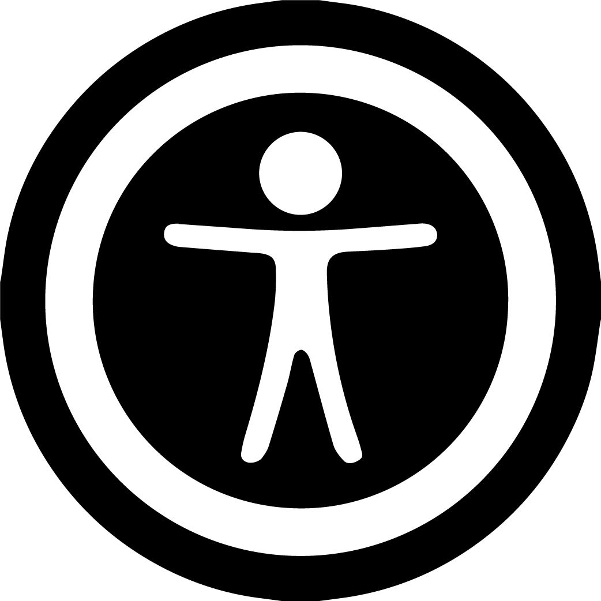

Neden Bu Proje?

Ulaşabilirlik
Sakarya Eğitim Anketi projesi Sakarya'da eğitim görmüş öğrencilerin fikirlerini ve yaşadıkları sorunları aktarabilmelerine yardımcı olma amacıyla yapılmaktadır. Anket sonuçları analiz edilecek ve süreç içerisinde şeffaf olunacaktır.
Kullanıcılar anket bitene kadar süreci Instagram adresimizden takip edebilir. Anket bittiğinde ise kullanıcılar mail yoluyla
bilgilendirilecek ve sonuçlar bu sitede paylaşılacaktır.

İhtiyaç
Benim ve tanıdığım insanların gözlemlerine göre Sakarya'daki eğitiminde sorunlar yaşamış ve yaşayan bir sürü insan bulunmakta. Sakarya özelinde bu konuya dair bir araştırma ise henüz internet üzerinde bulunmamakta. Öğrencilerin ortak
sorunlarının öğrenilmesi ve paylaşılması gerekiyor.
Öğrenme Hedefleri
Bu projeyi yapıyor olmamın ana nedenlerinden bir tanesi de bu süreç içerisinde bir sürü yararlı beceri kazanıyor olmam. Örnek vermek gerekirse bu okuduğunuz siteyi yaparken html, css gibi araçların nasıl kullanıldığını ve yapılan bir
internet sitesinin nasıl internete sunulabileceğini öğrendim. Anket bitiminde ise veri analiz etme ve istatistikler üzerinde çalışıyor olacağım.